MAE 5803 - Homework #1 Problem #3
Tim Coon: 25, January 2017
Contents
clear; close all; clc;
Consider the following second-order system
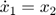
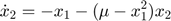
a) Plot Eigenvalues
Find the eigenvalues of the linearized system about the equilibrium point, (0,0). Express your answer in terms of 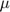. Sketch in the complex plane the variation of the locations of these eigenvalues as varies from -0.5 to 0.5.
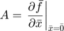
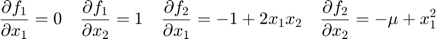
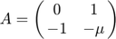
Calculate the eigenvalues for samples of the range of specified
mu = [-0.5:0.25:0.5]; eValue = zeros(2,length(mu)); figure(1) hold on for i = 1:length(mu) A = [0 1; -1 -mu(i)]; eValue(:,i) = eig(A); plot(real(eValue(:,i)),imag(eValue(:,i)),'*','MarkerSize',12) end ax = gca; ax.XAxisLocation = 'origin'; ax.YAxisLocation = 'origin'; ylim([-1.2 1.2]); title('Eigenvalues of Linearized System') xlabel('$\sigma$'); ylabel('j$\omega$'); legend(strcat('\mu = ',strread(num2str(mu),'%s')),'Location','EastOutside') hold off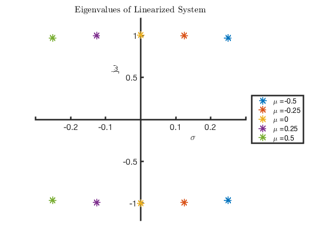
b) Nonliear Phase Portraits
Draw the phase portraits of the system using MATLAB for 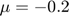, 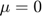, and 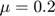. Use -2 to 2 range of values for the horizontal and vertical axes.
mu = [-0.2 0 0.2]; for i = 1:length(mu) figure() hold on for x1 = -1.5:.5:1.5 for x2 = -1.5:.5:1.5 tspan = [0 3]; x0 = [x1; x2]; [t,x] = ode45(@P3stateEqn,tspan,x0,[],mu(i)); h = plot(x(:,1),x(:,2)); c = get(h,'color'); plot(x0(1),x0(2),'+','color',c); end end axis([-2 2 -2 2]) xlabel('$x_1$') ylabel('$x_2$') title(strcat('Nonlinear system phase portrait, $\mu =$ ', num2str(mu(i)))) hold off end
 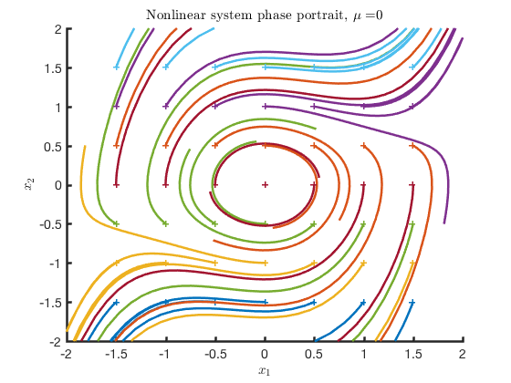 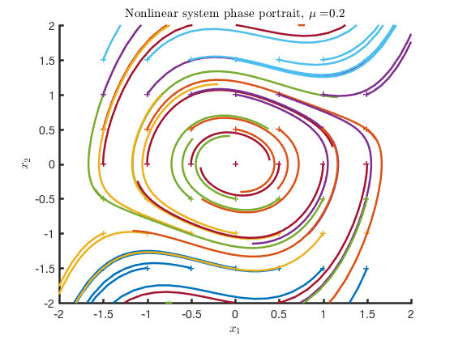
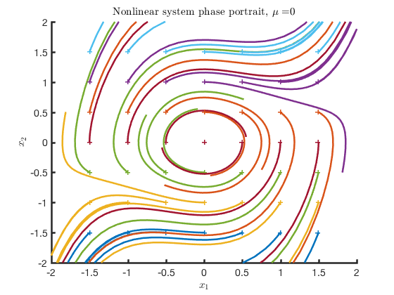 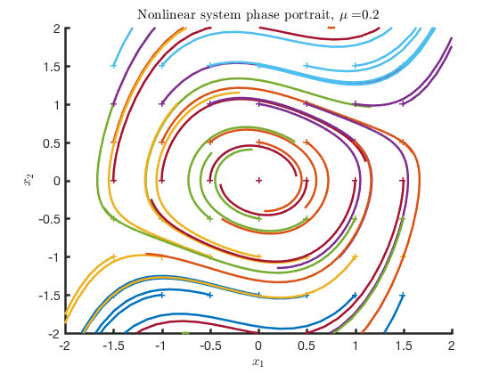 d) Observations
What phenomenon do you observe as the parameter, , varies from negative to positive? Justify your answer using Poincare-Bendixson Theorem.
- If the real parts of all eigenvalues are negative, then 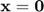 is locally asymptotically stable
- If the real part of at least one eigenvalue is positive, then is locally unstable
- If the real part of at least one eigenvalue is equal to zero, then the local stability of cannot be concluded
From the plot of eigenvalues, it can be seen, as goes from negtive to positive, the real part of the eigenvalues moves from positive to negative. Thus, the system transitions from locally asymptotically stable to locally unstable. At , the eigenvalues have real parts equal to zero, but the phase portrait reveals the system is unstable at this point.
Poincare-Bendixson Theorem: If a trajectory of a second-order autonomous system remains in a finite region (), then one of the following is true:
- The trajectory goes to an equilibrium point
- The trajectory tends to a stable limit cycle
- The trajectory itself is a limit cycle
Consider the region defined by the ball centered on the origin with a radius greater than the distance from the origin to the initial point. The system with negative real parts of all eigenvalues goes towards the equilibrium point at the origin. The system with zero real parts to the eigen values are found to increase indefinitely, if only slowly when near the origin. Thus, there is no region in which these trajectories are contained and PB Theorem does not apply. The same goes for the eigenvalues having positive real parts and the rate of increase increases with .